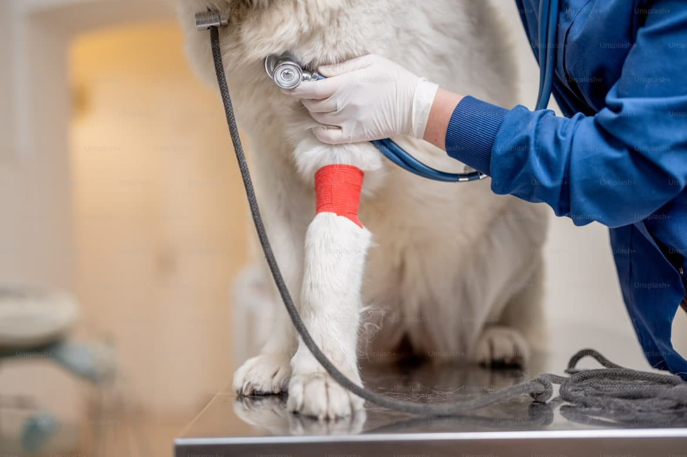
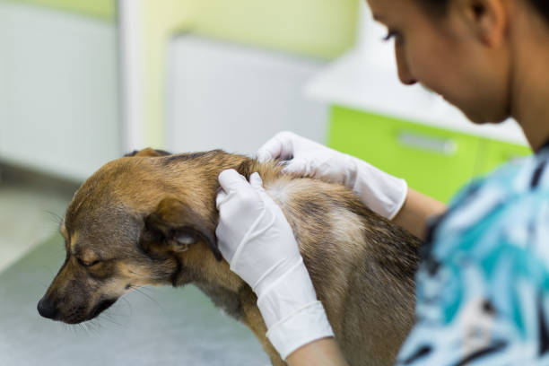
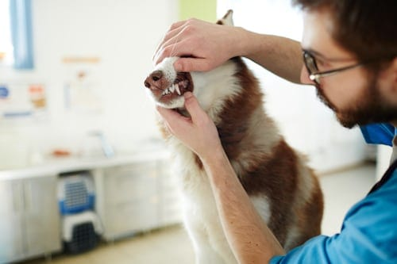
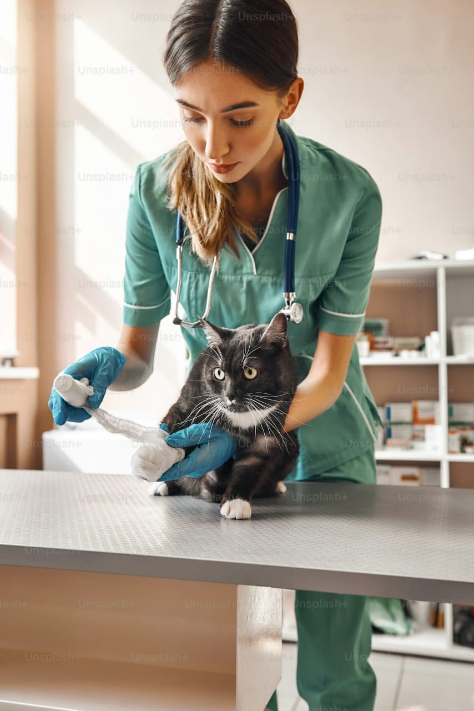
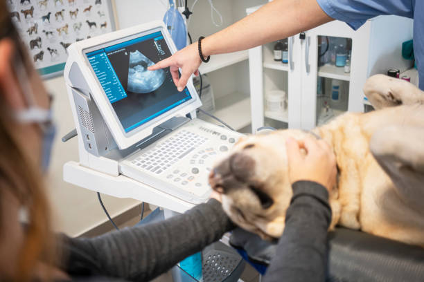
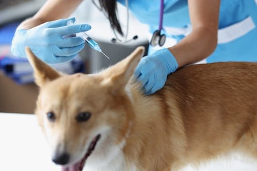
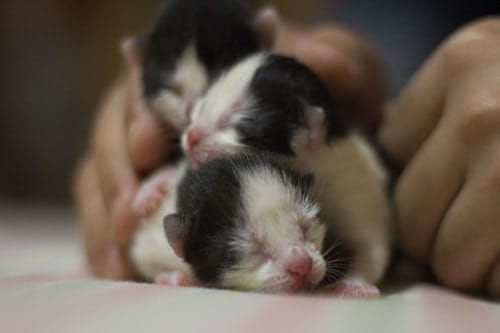
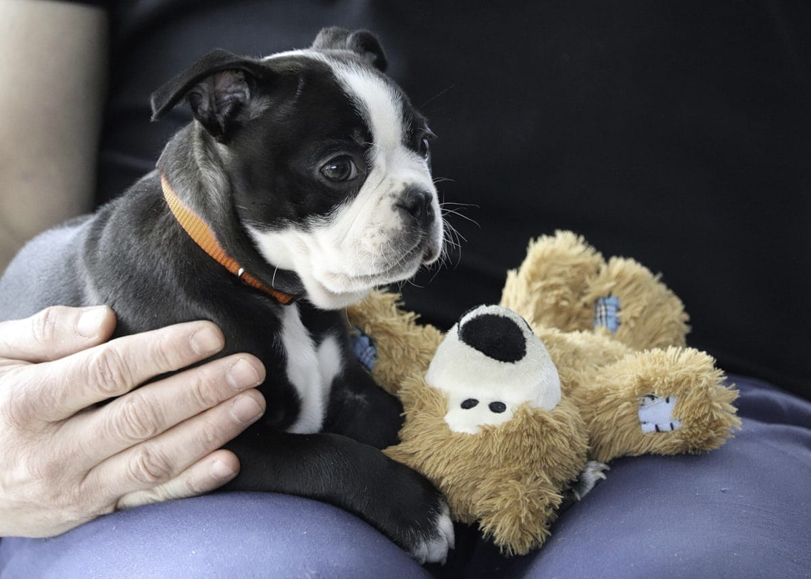

Nuestros servicios y especialidades
Consultas clínicas generales: Evaluación completa para todo tipo de mascotas.
Vacunación: Calendario adaptado por especie, edad y estilo de vida.
Desparasitación interna y externa: Planes preventivos personalizados.
Esterilización/castración: Procedimientos seguros y con seguimiento posquirúrgico.
Emergencias: Atención rápida ante accidentes o síntomas agudos.
Modalidad de atención
Turnos con cita previa o guardia veterinaria.
Posibilidad de atención a domicilio.
Atención por WhatsApp o chat web.
Planes o combos
Plan Cachorro: Vacunas + desparasitación + control de peso.
Plan Senior: Control de artrosis + chequeos cardíacos y renales.
Combo Gato indoor: Vacunas + antiparasitarios + corte de uñas.
Especialidades
Cardiología veterinaria

Diagnóstico y tratamiento de enfermedades del corazón en perros y gatos, como soplos, arritmias o insuficiencia cardíaca.
Se realizan estudios como ecocardiogramas y electrocardiogramas.
Dermatología veterinaria

Diagnóstico de alergias, infecciones, caída de pelo, sarna o problemas de piel y oídos.
Se realiza mediante análisis y tratamiento personalizado.
Odontología

Limpieza dental, extracciones, tratamiento de sarro y prevención de enfermedades periodontales.
La salud bucal es clave para el bienestar general de tu mascota.
Traumatología y ortopedia

Atención a fracturas, luxaciones o displasia. Incluye cirugías, rehabilitación y seguimiento posoperatorio.
Diagnóstico por imágenes

Radiografías, ecografías y estudios complementarios para diagnósticos más precisos sin procedimientos invasivos.
Laboratorio clínico

Análisis de sangre, orina, coproparasitológicos y más. Útil para controles preventivos y diagnósticos en casos clínicos
Neonatología y pediatría

Control de salud en cachorros y gatitos: vacunación, nutrición, desparasitación y crecimiento saludable.
Geriatría veterinaria
Atención a mascotas mayores, con foco en enfermedades crónicas (artrosis, insuficiencia renal, problemas cognitivos, etc.)
Etología (comportamiento animal)

Asesoramiento en problemas de conducta como ansiedad por separación, agresividad, miedos o ladridos excesivos.